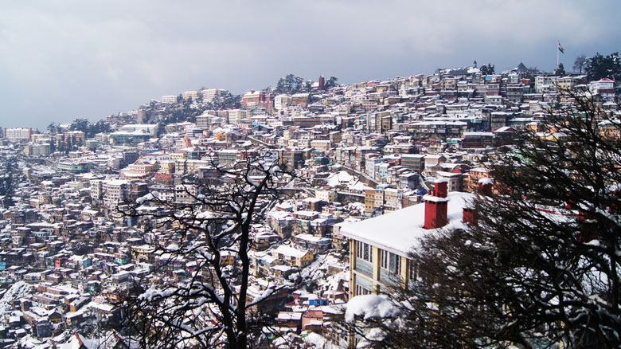
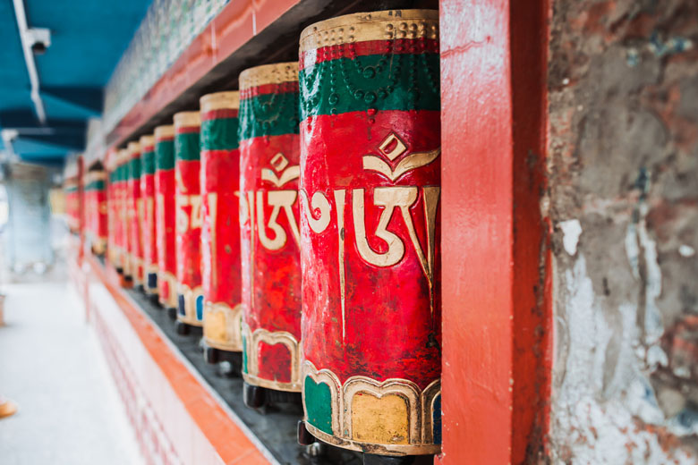

Kullu in Himachal Pradesh is one of the most frequented tourist destinations. Often heard along with the name Manali, yet another famous tourist spot, Kullu is situated on the banks of Beas River. It was earlier called as Kulanthpitha, meaning ‘The end of the habitable world’.

Shimla
The enchanting beauty of Shimla made British declare the land as their summer capital. The hill station offers spectacular views of the snow-capped Himalayan ranges. With lakes and rich greenery around, Simla welcomes tourists round the year.

Dharmshala
‘The Scotland of India’, as Dharamshala is famously referred to, has snow-clad mountains on three sides and valley on one side. The mountains being over 4000 m height. Pine trees and tree gardens along with snow covered mountains render magic to the air.